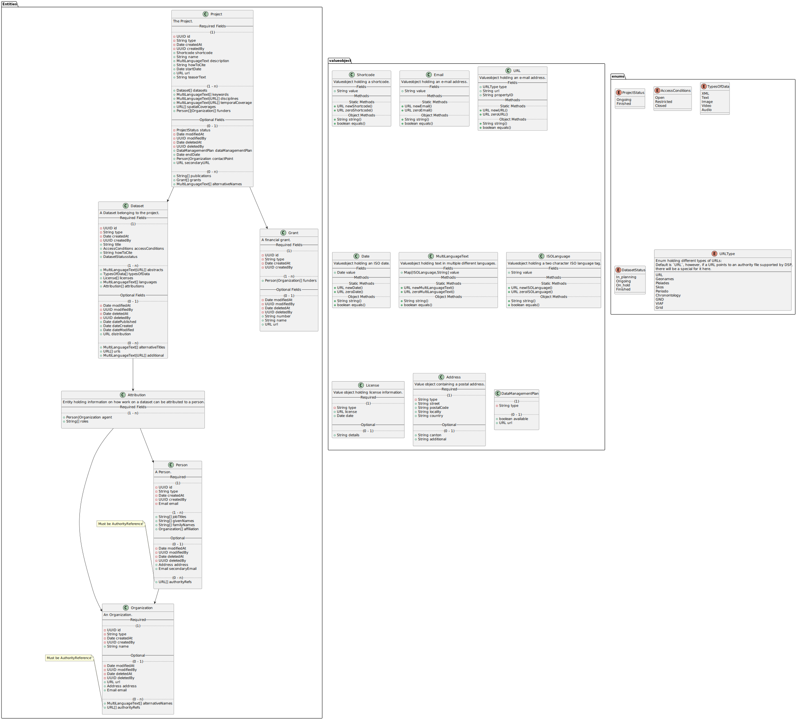

Metadata
Top Level Resource Classes
| General | Domain Model | JSON API | RDF Mapping | SWISSUbase mapping |
|---|---|---|---|---|
| Project | Project | object | :Project | StudyVersion (300) |
| Dataset | Dataset | object | :Dataset | DatasetVersion (400) |
| Person | Person | object | :Person | Person (100) |
| Organization | Organization | object | :Organization | Institution (200) |
| Grant | Grant | object | :Grant | ? |
Properties on Resource Classes
Project
| Property | Note | Cardinality | Domain Model | Domain Model Type | JSON API | JSON Type | RDF Mapping | RDF type | RDF Cardinality | SWISSUbase mapping |
|---|---|---|---|---|---|---|---|---|---|---|
| ID | internal ID | 1 | id |
UUID |
__id |
string | IRI | IRI | - | - |
| type | internal type | 1 | type |
String |
__type |
string | @type / rdf:type |
rdf:type | - | - |
| created at | internal creation date | 1 | createdAt |
Date |
__createdAt |
string | - | - | - | - |
| created by | ID of the user who created the resource | 1 | createdBy |
User |
__createdBy |
string | - | - | - | - |
| modified at | internal last modification date | 0-1 | modifiedAt |
Date |
__modifiedAt |
string | - | - | - | - |
| modified by | ID of the user who last the resource | 0-1 | modifiedBy |
User |
__modifiedBy |
string | - | - | - | - |
| deleted at | internal deletion date | 0-1 | deletedAt |
Date |
__deletedAt |
string | - | - | - | - |
| deleted by | ID of the user who deleted the resource | 0-1 | deletedBy |
User |
__deletedBy |
string | - | - | - | - |
| (†) short code | deprecated internal short code | 1 | shortcode |
Shortcode |
shortcode |
string | :hasShortcode |
xsd:string | 1 | ? |
| name | project name | 1 | name |
String |
name |
string | :hasName |
xsd:string | 1 | Title (302) |
| description | project description | 1 | description |
MultiLanguageText |
description |
object (multi-language text) | :hasDescription |
rdf:langString | 1-n | Abstract (314) |
| how-to-cite | representation how to correctly cite the project | 1 | howToCite |
String |
howToCite |
string | :hasHowToCite |
xsd:string | 1 | ? |
| start date | start date of the project | 1 | startDate |
Date |
startDate |
string (YYYY-MM-DD) |
:hasStartDate |
xsd:date | 1 | Start date (308) |
| teaser text | short teaser text for previewing the project | 1 | teaserText |
String |
teaserText |
string | :hasTeaser |
xsd:string | 1 | ? |
| datasets | references to all datasets that are part of the project | 1-n | datasets |
Dataset[] |
datasets |
array of string (ID) | :hasDataset |
:Dataset | 1-n | - (they link it in 400.1) |
| keywords | keywords describing the project | 1-n | keywords |
MultiLanguageText[] |
keywords |
array of object (multi-language text) | :hasKeyword |
rdf:langString | 1-n | ? |
| disciplines | discipline of research the project belongs to | 1-n | disciplines |
MultiLanguageText/URL[] |
disciplines |
array of object (multi-language text or URL) | :hasDiscipline |
schema:URL or rdf:langString | 1-n | ? |
| temporal coverage | time period covered by the project | 1-n | temporalCoverage |
MultiLanguageText/URL[] |
temporalCoverage |
array of object (multi-language text or URL) | :hasTemporalCoverage |
schema:URL or rdf:langString | 1-n | Period (311) |
| spatial coverage | geographic region covered by the project | 1-n | spatialCoverage |
URL[] |
spatialCoverage |
array of object (URL) | :hasSpatialCoverage |
schema:URL | 1-n | Geographical Space (312) / Geographical Area (313) |
| funders | funding persons or organizations | 1-n | funders |
Person/Organization[] |
funders |
array of string (ID) | :hasFunder |
:Person or :Organization | 1-n | Funding (318) |
| primary URL | project's primary URL, pointing to the DaSCH | 1 | url |
URL |
url |
object (URL) |
:hasURL |
schema:URL | 1 | ? (329?) |
| secondary URL | optional secondary URL, pointing to a specific project website | 0-1 | secondaryURL |
URL |
secondaryURL |
object (URL) |
:hasSecondaryURL |
schema:URL | 0-1 | ? (329?) |
| data management plan | data management plan | 0-1 | dataManagementPlan |
DataManagementPlan |
dataManagementPlan |
string (ID) | :hasDataManagementPlan |
:DataManagementPlan | 0-1 | ? |
| end date | end date of the project | 0-1 | endDate |
Date |
endDate |
string (YYYY-MM-DD) |
:hasEndDate |
xsd:date | 0-1 | End date (309) |
| contact point | contact person or organization | 0-1 | contactPoint |
Person/Organization |
contactPoint |
string (ID) | :hasContactPoint |
:Person or :Organization | 0-1 | Authors (306) -> only persons |
| publications | scientific works published in the context of the project | 0-n | publications |
String[] |
publications |
array of string | :hasPublication |
xsd:string | 0-n | Publications (319) |
| grants | financial grants granted to the project | 0-n | grants |
Grant[] |
grants |
array of string (ID) | :hasGrant |
:Grant | 0-n | ? |
| alternativeNames | alternative names of the project | 0-n | alternativeNames |
MultiLanguageText[] |
alternativeNames |
object (multi-language text) | :hasAlternativeName |
rdf:langString | 0-n | Title (302) |
| _______ | _________ | ___ | ________ | ______ | ________ | _________ | _________ | _______ | ___ | _____ |
Dataset
| Property | Note | Cardinality | Domain Model | Domain Model Type | JSON API | JSON Type | RDF Mapping | RDF type | RDF Cardinality | SWISSUbase mapping |
|---|---|---|---|---|---|---|---|---|---|---|
| ID | internal ID | 1 | id |
UUID |
__id |
string | IRI | IRI | - | - |
| type | internal type | 1 | type |
String |
__type |
string | @type / rdf:type |
rdf:type | - | - |
| created at | internal creation date | 1 | createdAt |
Date |
__createdAt |
string | - | - | - | - |
| created by | ID of the user who created the resource | 1 | createdBy |
User |
__createdBy |
string | - | - | - | - |
| modified at | internal last modification date | 0-1 | modifiedAt |
Date |
__modifiedAt |
string | - | - | - | - |
| modified by | ID of the user who last the resource | 0-1 | modifiedBy |
User |
__modifiedBy |
string | - | - | - | - |
| deleted at | internal deletion date | 0-1 | deletedAt |
Date |
__deletedAt |
string | - | - | - | - |
| deleted by | ID of the user who deleted the resource | 0-1 | deletedBy |
User |
__deletedBy |
string | - | - | - | - |
| title | title of the dataset | 1 | title |
String |
title |
string | :hasTitle |
xsd:string | 1 | Title (402) |
| access conditions | conditions under which the dataset can be accessed | 1 | accessConditions |
String |
accessConditions |
string | :hasAccessConditions |
xsd:string | 1 | Special permission (413) |
| how-to-cite | representation how to correctly cite the dataset | 1 | howToCite |
String |
howToCite |
string | :hasHowToCite |
xsd:string | 1 | Bibliographical citation (409) |
| status | the status of the dataset | 1 | status |
String (enum) |
status |
string (enum) | :hasStatus |
xsd:string | 1 | ? |
| abstracts | abstracts describing the dataset | 1-n | abstracts |
MultiLanguageText/URL[] |
abstract |
array of object (multi-language text or URL) | :hasAbstract |
rdf:langString or schema:URL | 1-n | ? |
| types of data | the types of data contained in the dataset | 1-n | typesOfData |
String[] (enum) |
typeOfData |
array of string (enum) | :hasTypeOfData |
xsd:string | 1-n | ? |
| licenses | the license(s) under which the data is made available | 1-n | licenses |
License[] |
licenses |
object (license) | :hasLicense |
:License | 1-n | ? |
| languages | the languages used in the dataset | 1-n | languages |
MultiLanguageText[] |
languages |
object (multi-language text) | :hasLanguage |
rdf:langString | 1-n | ? |
| attributions | attributions of contributions to the dataset by people or organizations | 1-n | attributions |
Attribution[] |
attributions |
object (attribution) | :hasQualifiedAttribution |
prov:Attribution | 1-n | ? |
| date published | publication date of the dataset | 0-1 | datePublished |
Date |
datePublished |
string | :hasDatePublished |
xsd:date | 0-1 | ? |
| date created | creation date of the dataset | 0-1 | dateCreated |
Date |
dateCreated |
string | :hasDateCreated |
xsd:Date | 0-1 | ? |
| date modified | last modification date of the dataset | 0-1 | dateModified |
Date |
dateModified |
string | :hasDateModified |
xsd:Date | 0-1 | ? |
| distribution | distribution URL of the entire dataset | 0-1 | distribution |
URL |
distribution |
object (URL) | :hasDistribution |
schema:DataDownload | 0-1 | ? |
| alternative titles | alternative titles of the dataset | 0-n | alternativeTitles |
MultiLanguageText[] |
alternativeTitles |
array of object (multi-language text) | :hasAlternativeTitle |
rdf:langString | 0-n | Title (402) |
| URLs | URLs pointing to representations of this dataset | 0-n | urls |
URL[] |
urls |
array of object (URL) | :hasURL |
schema:URL | 0-n | ? |
| additional | additional information on the dataset | 0-n | additional |
MultiLanguageText/URL[] |
additional |
array of object (multi-language text or URL) | :hasAdditional |
rdf:langString or schema:URL | 0-n | Additional Information (404) |
| _______ | _________ | ___ | ________ | ______ | ________ | _________ | _________ | ____ | ___ | ____ |
Status
Dataset status can have one of the following values:
In planningOngoingOn holdFinished
Types of Data
The following values are allowed in "Types of Data":
XMLTextImageVideoAudio
Access Conditions
The following values are allowed as access conditions:
openrestrictedclosed
Person
| Property | Note | Cardinality | Domain Model | Domain Model Type | JSON API | JSON Type | RDF Mapping | RDF type | RDF Cardinality | SWISSUbase mapping |
|---|---|---|---|---|---|---|---|---|---|---|
| ID | internal ID | 1 | id |
UUID |
__id |
string | IRI | IRI | - | - |
| type | internal type | 1 | type |
String |
__type |
string | @type / rdf:type |
rdf:type | - | - |
| created at | internal creation date | 1 | createdAt |
Date |
__createdAt |
string | - | - | - | - |
| created by | ID of the user who created the resource | 1 | createdBy |
User |
__createdBy |
string | - | - | - | - |
| modified at | internal last modification date | 0-1 | modifiedAt |
Date |
__modifiedAt |
string | - | - | - | - |
| modified by | ID of the user who last the resource | 0-1 | modifiedBy |
User |
__modifiedBy |
string | - | - | - | - |
| deleted at | internal deletion date | 0-1 | deletedAt |
Date |
__deletedAt |
string | - | - | - | - |
| deleted by | ID of the user who deleted the resource | 0-1 | deletedBy |
User |
__deletedBy |
string | - | - | - | - |
| job titles | job titles of the person | 1-n | jobTitles |
String[] |
jobTitles |
array of string | :hasJobTitle |
xsd:string | 1-n | Title (102) |
| given names | the given names/first names of the person | 1-n | givenNames |
String[] |
givenNames |
array of string | :hasGivenName |
xsd:string | 1 | First Name (104) |
| family name(s) | the family name(s) of a person | 1-n | familyNames |
String[] |
familyNames |
array of string | :hasFamilyName |
xsd:string | 1 | Last Name (103) |
| affiliation | the organizations a person is affiliated to | 1-n | affiliation |
Organization[] |
affiliation |
array of string (ID) | :hasAffiliation |
:Organization | 1-n | Affiliated institution (114) |
| address | the postal address of the person | 0-1 | address |
Address |
address |
object (Address) | :hasAddress |
:Address | 0-1 | Private address (112)? |
| the primary e-mail address | 0-1 | email |
Email |
email |
string | :hasEmail |
xsd:string | 0-1 | Email (107) | |
| secondary e-mail | the secondary e-mail address | 0-1 | secondaryEmail |
Email |
secondaryEmail |
string | :hasSecondaryEmail |
xsd:string | 0-1 | - |
| authority file references | references to the person's entry in external authority files | 0-n | authorityFileReferences |
URL[] |
authorityRefs |
object (URL) | :hasAuthorityFileReference |
schema:URL | 0-n | Orcid (113) -> NB: Orcid only! |
| _______ | _________ | ___ | ________ | ______ | ________ | _________ | ______ | ____ | ___ | ____ |
Organization
| Property | Note | Cardinality | Domain Model | Domain Model Type | JSON API | JSON Type | RDF Mapping | RDF type | RDF Cardinality | SWISSUbase mapping |
|---|---|---|---|---|---|---|---|---|---|---|
| ID | internal ID | 1 | id |
UUID |
__id |
string | IRI | IRI | - | - |
| type | internal type | 1 | type |
String |
__type |
string | @type / rdf:type |
rdf:type | - | - |
| created at | internal creation date | 1 | createdAt |
Date |
__createdAt |
string | - | - | - | - |
| created by | ID of the user who created the resource | 1 | createdBy |
User |
__createdBy |
string | - | - | - | - |
| modified at | internal last modification date | 0-1 | modifiedAt |
Date |
__modifiedAt |
string | - | - | - | - |
| modified by | ID of the user who last the resource | 0-1 | modifiedBy |
User |
__modifiedBy |
string | - | - | - | - |
| deleted at | internal deletion date | 0-1 | deletedAt |
Date |
__deletedAt |
string | - | - | - | - |
| deleted by | ID of the user who deleted the resource | 0-1 | deletedBy |
User |
__deletedBy |
string | - | - | - | - |
| name | the name of the organization | 1 | name |
String |
name |
string | :hasName |
xsd:string | 1 | Name (201) |
| URL | the organization's website | 0-1 | url |
URL |
url |
object (URL) | :hasURL |
schema:URL | 0-1 | Website (204) |
| address | postal address of the organization | 0-1 | address |
Address |
address |
object (Address) | :hasAddress |
:Address | 0-1 | Addresses (207) |
| e-mail address of the organization | 0-1 | email |
Email |
email |
string | :hasEmail |
xsd:string | 0-1 | Email (206) | |
| alternative names | alternative names of hte organization | 0-n | alternativeNames |
MultiLanguageText[] |
alternativeNames |
array of object (multi-language text) | :hasAlternativeName |
rdf:langString | 0-n | Name (201) |
| authority file references | references to the organization's entry in external authority files | 0-n | authorityFileReferences |
URL[] |
authorityRefs |
array of object (URL) | :hasAuthorityFileReference |
schema:URL | 0-n | ? |
| _______ | _________ | ___ | ________ | ______ | ________ | _________ | ______ | ____ | ___ | ____ |
Grant
| Property | Note | Cardinality | Domain Model | Domain Model Type | JSON API | JSON Type | RDF Mapping | RDF type | RDF Cardinality | SWISSUbase mapping |
|---|---|---|---|---|---|---|---|---|---|---|
| ID | internal ID | 1 | id |
UUID |
__id |
string | IRI | IRI | - | - |
| type | internal type | 1 | type |
String |
__type |
string | @type / rdf:type |
rdf:type | - | - |
| created at | internal creation date | 1 | createdAt |
Date |
__createdAt |
string | - | - | - | - |
| created by | ID of the user who created the resource | 1 | createdBy |
User |
__createdBy |
string | - | - | - | - |
| modified at | internal last modification date | 0-1 | modifiedAt |
Date |
__modifiedAt |
string | - | - | - | - |
| modified by | ID of the user who last the resource | 0-1 | modifiedBy |
User |
__modifiedBy |
string | - | - | - | - |
| deleted at | internal deletion date | 0-1 | deletedAt |
Date |
__deletedAt |
string | - | - | - | - |
| deleted by | ID of the user who deleted the resource | 0-1 | deletedBy |
User |
__deletedBy |
string | - | - | - | - |
| funders | funding persons or organizations | 1-n | funders |
Person/Organization[] |
funders |
array of string (ID) | :hasFunder |
:Person or :Organization | 1-n | ? |
| number | the official grant number | 0-1 | number |
String |
number |
string | :hasNumber |
xsd:string | 0-1 | ? |
| name | name of the grant type | 0-1 | name |
String |
name |
string | :hasName |
xsd:string | 0-n | ? |
| url | url of the grant | 0-1 | url |
URL |
url |
object (URL) | :hasURL |
schema:URL | 0-1 | ? |
| _______ | _________ | ___ | __ | _________ | ___ | ____ | _______ | ____ | ___ | _________ |
Data Types
Overview
| General | Domain Model | JSON API | RDF Mapping |
|---|---|---|---|
| UUID | UUID | string | xsd:string |
| string | String | string | xsd:string |
| boolean | Boolean | boolean | xsd:boolean |
| URL | URL | object | schema:URL |
| date | Date | string | xsd:date |
| multi-language text | MultiLanguageText | object | rdf:langString |
API Details
URL
{
"__type": "URL", // internal type: must always be `URL`
"type": "URL", // type: either `URL` or a supported authority file
"url": "https://www.example.com", // the actual URL
"text": "17th Century" // display text for the URL (optional)
}
The following values are accepted in type:
- URL
- Geonames
- Pleiades
- Skos/unesco6
- Periodo
- Chronontology
- GND
- VIAF
- Grid
Text (Multi-Language)
Representation of the same text in multiple languages (minimum 1 language).
The keys of the object must be a two character ISO language code string. The property can be any string in the according language.
{
"en": // ISO language code
"history", // string in said language
"de": "Geschichte" // the same for another language
}
It is recommended to always include english, furthermore any of the official languages of Switzerland can be used. Other languages may be used but are not likely to be prioritized to be displayed in the front end.
Attribution
Attribution attributes one or more roles to a person or organization.
{
"__type": "Attribution",
"agent": "ID", // ID of a person ort organization
"roles": [ // the roles of the person/organization
"PI",
"Editor"
]
}
Address
Representation of a postal address.
{
"__type": "Address",
"street": "Petersgraben 1",
"additional": "Postfach", // Can be c/o, post box or similar; is assumed to be the second address line (optional)
"postalCode": "4000",
"locality": "Basel",
"canton": "Basel-Stadt", // Organizational district like canton, state, etc. (optional)
"country": "Switzerland"
}
License
Representation of a license.
{
"__type": "License",
"license": { // a URL object
"__type": "URL",
"text": "CC-BY 4.0",
"type": "URL",
"url": "https://creativecommons.org/licenses/by/4.0/"
},
"date": "2020-01-01", // the licensing date
"details": "All XML files included in the dataset can be re-used under the CC BY 4.0 license." // additional information, e.g. license scope (optional)
}
Data Management Plan
{
"__type": "DataManagementPlan",
"available": true,
"url": {
"url": "https://dasch.swiss/someproject/dmp",
"type": "URL",
"__type": "URL"
}
}
Domain Model
The following UML diagram represents the domain entities:

Click on the image and open raw for a reasonable zoom level.
Note that cases, where the data model supposes a two different types, these are represented as two separate arrays for simplicity; these will be concatenated when the field is requested, and returned as one array through the API.
JSON API
A metadata set can be serialized to JSON. This JSON data must conform to the json-schema.
An example JSON dataset can be found here.
The JSON representation is "flat", i.e. not nested, so all top-level types are present in the first level of depth of the JSON document tree. All those objects have a unique @id property. Wherever this object is referenced further down in the document, this is done so by this ID.
(NB: JSON schema does not allow for consistency checks of internal references, so the existence of an object with a given ID can not be guaranteed by JSON validation).
RDF API
Metadata is available in RDF. The mappings are defined in the tables above.
Currently, JSON-LD, ttl and RDF-XML serializations are available.
Both metadata routes support JSON and RDF at the same time. RDF can be requested by means of content negotiation.
Adding the header Accept: application/ld+json, Accept: application/rdf+xml or Accept: text/turtle to the request, respectively will force the response to be RDF.
Get a single project
curl --location --request GET 'http://meta.dasch.swiss/api/v1/projects/0806' --header 'Accept: text/turtle'
will return the turtle representation of the project with the shortcode 0806.
Get all projects
curl --location --request GET 'http://meta.dasch.swiss/api/v1/projects' --header 'Accept: text/turtle'
will return JSON of the following format:
[
{
"id": "0806",
"name": "Anton Webern Gesamtausgabe",
"description": "...",
"metadata": "@prefix dsp: ..." // string containing the turtle serialization
},
{} // all other projects
]
Development
The UML diagrams are created using PlantUML which itself relies on GraphViz.
To create the diagrams, run yarn run uml. This requires Java and GraphViz to be installed.